# multi.py last updated 04/07/2019
# -------------------------Import Modules-------------------------
import tagatame
reload(tagatame)
from tagatame import *
# -------------------------Assets-------------------------
multi = 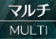
teamEdit =
myUnit = Pattern().targetOffset(-80,0)
arrowRight =
createRoom = 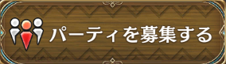
private = Pattern().targetOffset(126,0)
confirmCreate =
questFailed = Pattern().targetOffset(20,143)
dc = Pattern(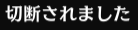).targetOffset(0,256)
finished = Pattern(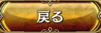).similar(0.90)
noxHome =
noxQuest =
noxMulti = 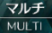
noxMultiMenu = 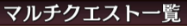
noxMyUnit =
noxArrow = Pattern().targetOffset(-150,425) # Offset for arrow location
noxCreateRoom = 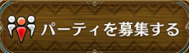
noxPrivate = Pattern().targetOffset(100,0)
noxConfirmCreate =
noxInvite =
noxIniteSlot1 = Pattern(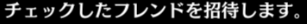).targetOffset(-120,60)
noxConfirmInvite =
rdpMsg =
inviteError = 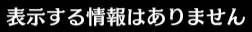
rdpInviteSlot1 = Pattern().targetOffset(400,110)
ready =
noxBtStart =
noxBtMenu =
noxRetreatBtn =
noxConfirm = Pattern().similar(0.80)
OK = Pattern().similar(0.80)
# Finished
# rdpOK
# rdpHome
# rdpMsg
# -------------------------Multi Action-------------------------
# Main interface
title = 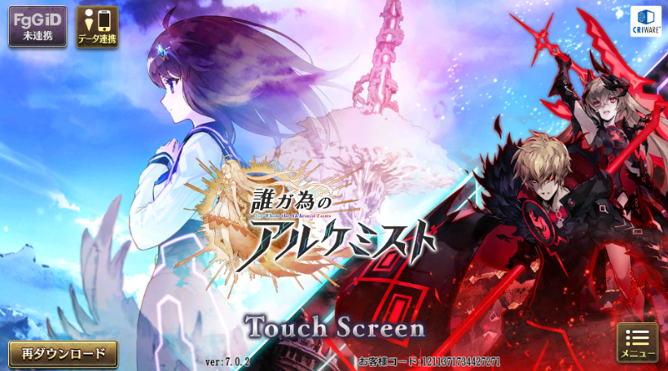
# Battle interface
end =
atk = Pattern().targetOffset(-202,-19)
mainSkill = Pattern().targetOffset(-100,-60)
subSkill = Pattern().targetOffset(-30,-135)
masterSkill = Pattern().targetOffset(10,-235)
actOK =
skillDown = Pattern().targetOffset(13,420)
skill1 = Pattern().targetOffset(-190,120)
skill2 = Pattern().targetOffset(-190,260)
skill3 = Pattern().targetOffset(-190,420)
def noxRetreat():
clkIco(noxBtMenu)
clkIco(noxRetreatBtn)
clkIco(noxConfirm)
clkIco(OK)
def act102():
sysMsg("Executing Act 102")
sysMsg("レティシア uses 2nd main skill - 銀彩ルサールカ, stays and end turn")
clkIco(mainSkill)
clkIco(skill2)
clkIco(actOK)
noxRetreat()
clkIco(end)
clkIco(actOK)
sysMsg("Step 2: クリーマ uses 5th main skill - 長雨カタツムリ, stays and end turn")
clkIco(mainSkill)
clkIco(skillDown)
clkIco(skillDown)
clkIco(skill3)
clkIco(actOK)
clkIco(end)
clkIco(actOK)
sysMsg("レティシア stays and end turn")
clkIco(end)
clkIco(actOK)
sysMsg("Step 4: クリーマ uses 5th main skill - 長雨カタツムリ, stays and end turn")
clkIco(mainSkill)
clkIco(skillDown)
clkIco(skillDown)
clkIco(skill3)
clkIco(actOK)
clkIco(end)
clkIco(actOK)
sysMsg("Step 5: レティシア stays and end turn")
clkIco(end)
clkIco(actOK)
sysMsg("Step 6: クリーマ uses 5th main skill - 長雨カタツムリ, quest completed")
clkIco(mainSkill)
clkIco(skillDown)
clkIco(skillDown)
clkIco(skill3)
clkIco(actOK)
# -------------------------Variables-------------------------
# Define class for multi quest
class multiQ(object):
def __init__(self, chapter, stage):
self.chapter = chapter
self.stage = stage
ch =
stg = Pattern().exact()
gain =
zin =
solo = multiQ(ch, stg)
noxCh1 =  noxStg02 = Pattern(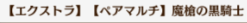).similar(0.90)
noxStg05 = Pattern(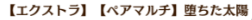).similar(0.90)
nox102 = multiQ(noxCh1, noxStg02)
nox105 = multiQ(noxCh1, noxStg05)
# -------------------------Define Function-------------------------
# Choose unit
def myUnit(icon):
click(myUnit)
while not exists(icon):
click(arrowRight)
sysMsg("Turning page: character")
click(icon)
# Go to multi quest
def gotoMulti(multiQ):
if not exists(settings, short):
click(home)
wait(quest, 20)
sleep(double)
click(quest)
clkIco(multi)
while not exists(multiQ.chapter, double):
click(questArrow)
sysMsg("Turning page: chapter")
click(multiQ.chapter)
while not exists(multiQ.stage, double):
click(questArrow)
sysMsg("Turning page: stage")
clkIco(multiQ.stage)
click(createRoom)
click(private)
click(confirmCreate)
def gotoNoxMulti(multiQ):
if not exists(noxInvite, short):
sysMsg("[Nox] Going to selected multi quest")
if not exists(noxMyUnit, short):
if not exists(noxMultiMenu, short):
if exists(noxHome, short):
clkIco(noxHome)
clkIco(noxQuest)
clkIco(noxMulti)
wait(noxMultiMenu, FOREVER)
while not exists(multiQ.chapter, double):
clkIco(noxArrow)
sysMsg("[Nox] Turning page: chapter")
clkIco(multiQ.chapter)
sleep(double)
while not exists(multiQ.stage, double):
clkIco(noxArrow)
sysMsg("[Nox] Turning page: stage")
clkIco(multiQ.stage)
clkIco(noxCreateRoom)
clkIco(noxPrivate)
clkIco(noxConfirmCreate)
else:
sysMsg("[Nox] Aleady in multi quest preparation page")
# Remote Desktop accept invitation
def rdpAcceptInvite():
if exists(home):
clkIco(home)
clkIco(rdpMsg)
if exists(inviteError):
sysMsg("Error - no invitation message")
exit()
clkIco(rdpInviteSlot1)
clkIco(ready)
def multiSingle(multiQ):
sysMsg("Initializing MultiSingle command")
if not exists(btStart, short):
sysMsg("Going to selected multiplayer quest")
gotoMulti(chapter, stage)
clkIco(btStart)
sysMsg("Quest started")
if exists(noAP, short):
sysMsg("Insufficient AP")
exit()
click(cfnEmpty)
sysMsg("Battle started")
if exists(questFailed, 180):
clkIco(questFailed)
sysMsg("Quest failed")
else:
clkIco(finished)
if exists(finished):
sysMsg("Quest completed")
clkIco(finished)
sleep(10)
type(Key.ESC)
sleep(changePage)
def multiDouble(multiQ, script, n=0):
sysMsg("Initializing MultiDouble command")
i = 0
while i < n:
gotoNoxMulti(multiQ)
# Nox send invitation (slot 1)
clkIco(noxInvite)
clkIco(noxIniteSlot1)
clkIco(noxConfirmInvite)
rdpAcceptInvite()
# Nox start multi quest and retreat
clkIco(noxBtStart, None, True)
sysMsg("Entering battle")
### Nox disconnect script here ###
# if exists(title):
# clkIco(title)
# clkIco(OK)
# sysMsg("Nox has reconnected")
# Executed saved action
script()
# multiAction(multiQ.action)
# if exists(questFailed, 180):
# clkIco(questFailed)
# sysMsg("Quest failed")
# Remote Desktop completed quest
#if exists(finished):
# sysMsg("Quest completed")
clkIco(finished, extend)
clkIco(OK)
i = i + 1
sysMsg("Successfully executed " + str(i) + " time(s)")
if n < 0:
sysMsg("Error: n must be empty or positive")
else:
exit()
# -------------------------Body-------------------------
# multiSingle(solo)
multiDouble(nox102, act102, 100)
# act102()
noxStg02 = Pattern(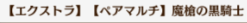).similar(0.90)
noxStg05 = Pattern(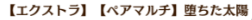).similar(0.90)
nox102 = multiQ(noxCh1, noxStg02)
nox105 = multiQ(noxCh1, noxStg05)
# -------------------------Define Function-------------------------
# Choose unit
def myUnit(icon):
click(myUnit)
while not exists(icon):
click(arrowRight)
sysMsg("Turning page: character")
click(icon)
# Go to multi quest
def gotoMulti(multiQ):
if not exists(settings, short):
click(home)
wait(quest, 20)
sleep(double)
click(quest)
clkIco(multi)
while not exists(multiQ.chapter, double):
click(questArrow)
sysMsg("Turning page: chapter")
click(multiQ.chapter)
while not exists(multiQ.stage, double):
click(questArrow)
sysMsg("Turning page: stage")
clkIco(multiQ.stage)
click(createRoom)
click(private)
click(confirmCreate)
def gotoNoxMulti(multiQ):
if not exists(noxInvite, short):
sysMsg("[Nox] Going to selected multi quest")
if not exists(noxMyUnit, short):
if not exists(noxMultiMenu, short):
if exists(noxHome, short):
clkIco(noxHome)
clkIco(noxQuest)
clkIco(noxMulti)
wait(noxMultiMenu, FOREVER)
while not exists(multiQ.chapter, double):
clkIco(noxArrow)
sysMsg("[Nox] Turning page: chapter")
clkIco(multiQ.chapter)
sleep(double)
while not exists(multiQ.stage, double):
clkIco(noxArrow)
sysMsg("[Nox] Turning page: stage")
clkIco(multiQ.stage)
clkIco(noxCreateRoom)
clkIco(noxPrivate)
clkIco(noxConfirmCreate)
else:
sysMsg("[Nox] Aleady in multi quest preparation page")
# Remote Desktop accept invitation
def rdpAcceptInvite():
if exists(home):
clkIco(home)
clkIco(rdpMsg)
if exists(inviteError):
sysMsg("Error - no invitation message")
exit()
clkIco(rdpInviteSlot1)
clkIco(ready)
def multiSingle(multiQ):
sysMsg("Initializing MultiSingle command")
if not exists(btStart, short):
sysMsg("Going to selected multiplayer quest")
gotoMulti(chapter, stage)
clkIco(btStart)
sysMsg("Quest started")
if exists(noAP, short):
sysMsg("Insufficient AP")
exit()
click(cfnEmpty)
sysMsg("Battle started")
if exists(questFailed, 180):
clkIco(questFailed)
sysMsg("Quest failed")
else:
clkIco(finished)
if exists(finished):
sysMsg("Quest completed")
clkIco(finished)
sleep(10)
type(Key.ESC)
sleep(changePage)
def multiDouble(multiQ, script, n=0):
sysMsg("Initializing MultiDouble command")
i = 0
while i < n:
gotoNoxMulti(multiQ)
# Nox send invitation (slot 1)
clkIco(noxInvite)
clkIco(noxIniteSlot1)
clkIco(noxConfirmInvite)
rdpAcceptInvite()
# Nox start multi quest and retreat
clkIco(noxBtStart, None, True)
sysMsg("Entering battle")
### Nox disconnect script here ###
# if exists(title):
# clkIco(title)
# clkIco(OK)
# sysMsg("Nox has reconnected")
# Executed saved action
script()
# multiAction(multiQ.action)
# if exists(questFailed, 180):
# clkIco(questFailed)
# sysMsg("Quest failed")
# Remote Desktop completed quest
#if exists(finished):
# sysMsg("Quest completed")
clkIco(finished, extend)
clkIco(OK)
i = i + 1
sysMsg("Successfully executed " + str(i) + " time(s)")
if n < 0:
sysMsg("Error: n must be empty or positive")
else:
exit()
# -------------------------Body-------------------------
# multiSingle(solo)
multiDouble(nox102, act102, 100)
# act102()